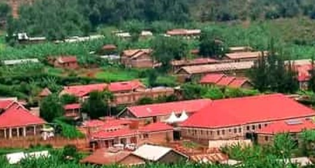

Our Story

Mother Franciscka Lechner Health Centre IV is a well-established healthcare facility located in Rushooka village, Ruhega parish, Kayonza sub-county in Ntungamo District, along Kabale Road.
The health centre was named in honour of Mother Franciscka Lechner and has grown over the years to become a vital healthcare provider for the surrounding communities. We serve thousands of patients each year, providing both outpatient and inpatient medical services.
As a Health Centre IV, we are equipped with a range of medical facilities including an operating theatre, maternity ward, laboratory, pharmacy, and emergency care unit. Our goal is to bring quality healthcare closer to the people who need it most.
Our Mission
To provide affordable, accessible and quality healthcare services to the people of Ntungamo District and the surrounding communities, with compassion and dedication.
Our Vision
To be a leading community health centre that promotes the health and well-being of every person we serve, through excellent medical care, prevention and health education.
Our Core Values
Compassion
We treat every patient with kindness, care and respect.
Quality
We strive for excellence in all our medical services.
Accessibility
We make healthcare affordable and available to everyone.
Teamwork
Our staff works together to deliver the best patient outcomes.
Our Team
Mother Franciscka Lechner Health Centre IV is staffed by a dedicated team of doctors, nurses, midwives, laboratory technicians, pharmacists and support staff. Together, we work to ensure the health and safety of our community.


Hospital Overview
Our facility is equipped with modern medical equipment and a caring environment for all patients.